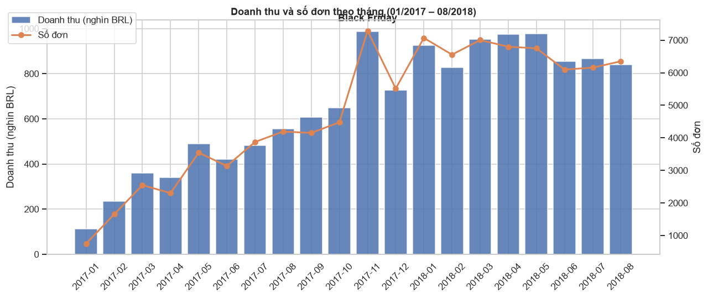
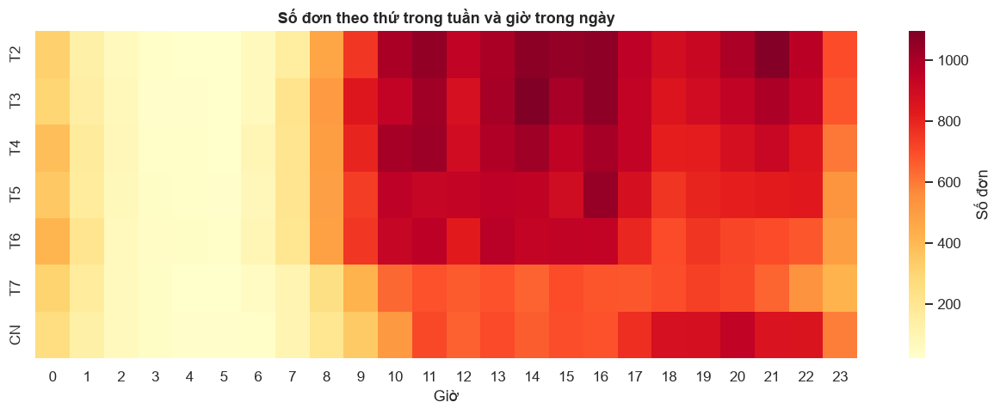
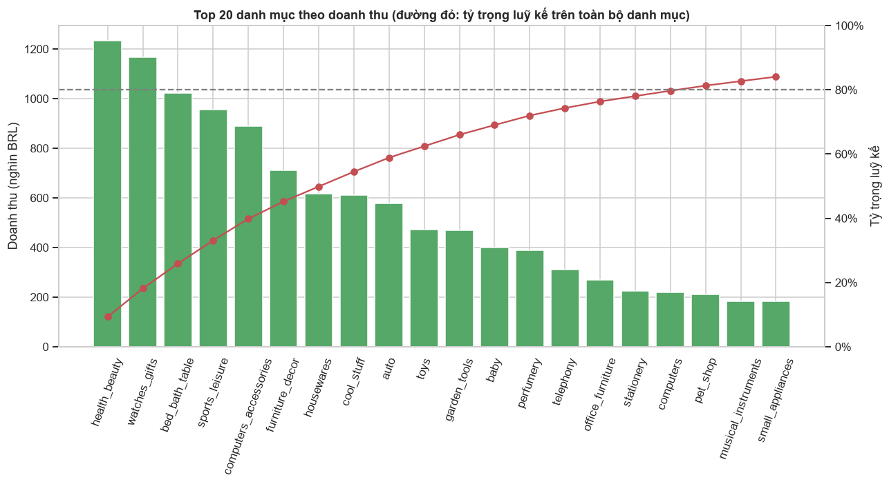
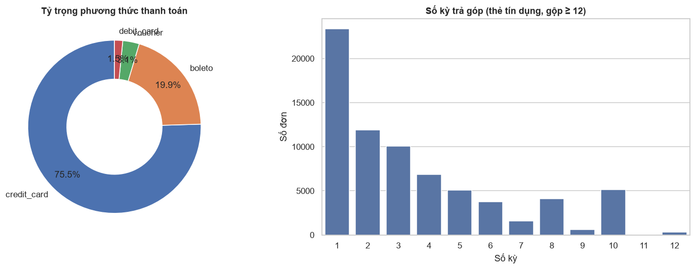
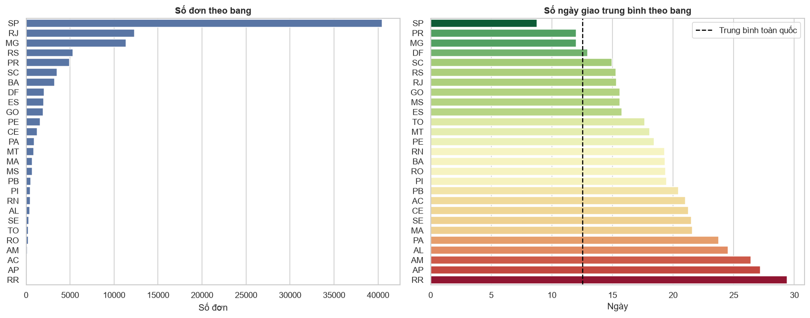
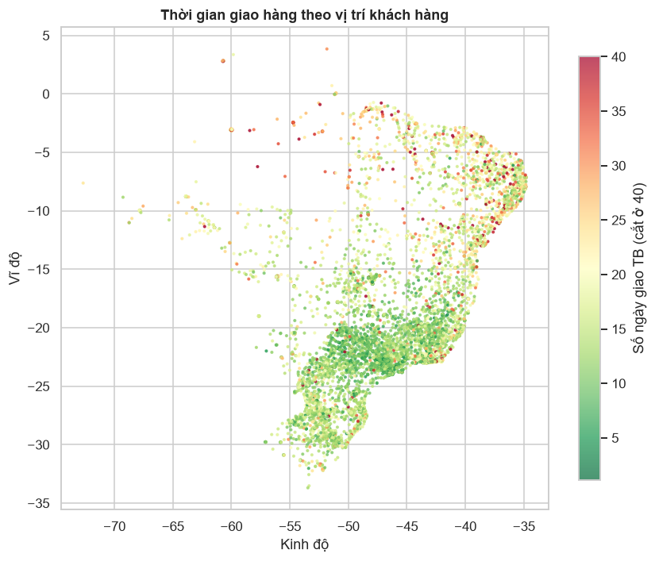
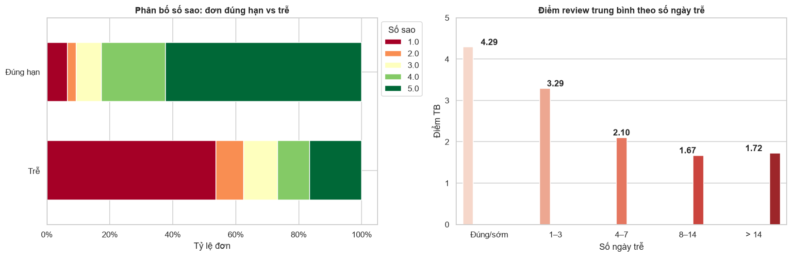
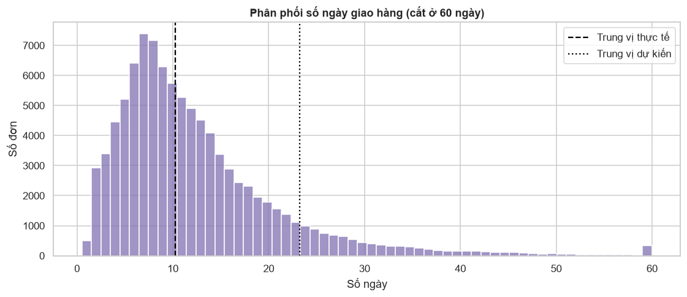
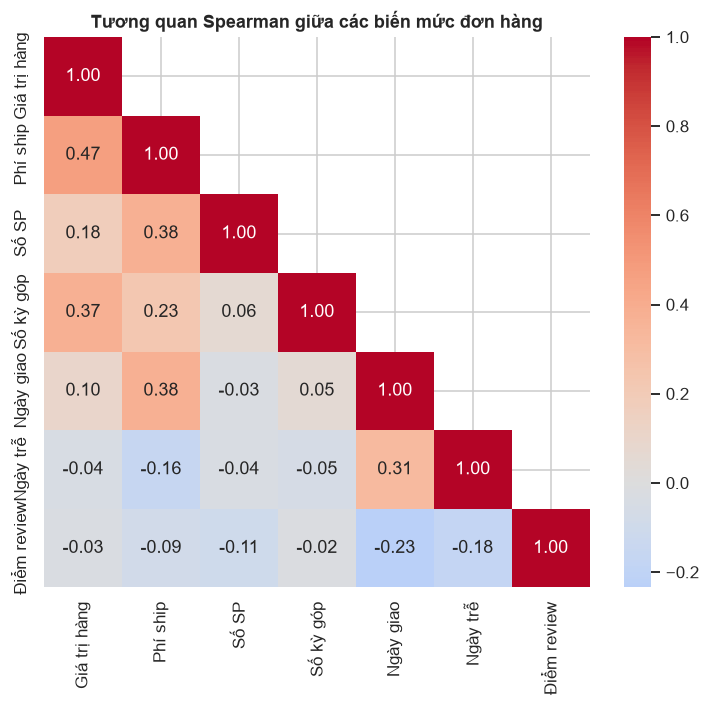

Phân Tích Dữ Liệu Thương Mại Điện Tử Olist (Brazil, 2016–2018)
Quy trình Khoa học Dữ liệu đầu–cuối: Khám phá (EDA) → Làm sạch (Preprocessing) → Kiểm định Thống kê (Analysis) → Trực quan hoá (Visualization)
📘 01. Data Understanding (EDA)
- Khảo sát 9 bảng gốc trong
data/raw/với hơn 1.55 triệu dòng. - Đánh giá tỷ lệ khuyết thiếu, trùng lặp, kiểu dữ liệu ngày tháng & mã bưu chính.
- Kiểm tra toàn vẹn khoá ngoại và phân phối ngoại lai của giá bán (
price).
🧹 02. Data Preprocessing
- Làm sạch 9 bảng, gắn cờ ngoại lai giá thay vì cắt giá để bảo toàn doanh thu.
- Rút gọn bảng
geolocationtừ 1,000,163 dòng xuống 19,011 mã zip duy nhất. - Đồng bộ khoá ngoại, tạo đặc trưng mới và xuất
olist_master.csv(110,186 × 49).
📊 03 & 04. Analysis & Visualization
- Gộp về mức đơn hàng (96,469 đơn) để không đếm lặp thanh toán và điểm đánh giá.
- Thực hiện 3 kiểm định giả thuyết thống kê (Mann-Whitney U, Chi-square, Spearman).
- Thiết kế 9 biểu đồ trực quan hoá toàn diện và đề xuất 5 giải pháp chiến lược.
Giai Đoạn 1: Tìm Hiểu & Khám Phá Dữ Liệu (EDA)
Kiểm toán chất lượng 9 bảng dữ liệu gốc trong data/raw/ trước khi làm sạch
🔍 Các phát hiện chất lượng dữ liệu quan trọng
- Trạng thái đơn hàng: 97.02% đơn là
delivered; tuy nhiên có 8 đơn delivered thiếu ngày giao và 2.98% đơn ở trạng thái huỷ / đang xử lý. - Bản ghi mồ côi (Orphan Records): Có 775 đơn hàng không có dòng sản phẩm nào trong
itemsvà 1 đơn không có lịch sử thanh toán. - Ngoại lai giá (Price Outliers): Ngưỡng IQR trên của
pricelà 277.40 BRL với 8,427 sản phẩm (7.48%) vượt ngưỡng. Đây là hàng điện tử/gia dụng đắt tiền thật, không phải lỗi. - Đánh giá (Reviews): Có 547 đơn có nhiều hơn 1 review; 88.34% thiếu tiêu đề và 58.70% thiếu nội dung bình luận.
- Sản phẩm & Danh mục: Tên cột sai chính tả (
lenght); 610 sản phẩm (1.85%) thiếu danh mục; 2 danh mục chưa có bản dịch tiếng Anh (pc_gamer,portateis_cozinha...). - Địa lý (Geolocation): 26.18% dòng trùng lặp hoàn toàn, trung bình 52.6 dòng/zip, và 42 toạ độ nằm ngoài lãnh thổ Brazil.
📋 Tổng hợp kiểm toán 9 bảng dữ liệu gốc
| Bảng | Số dòng | Trùng lặp | Vấn đề chính phát hiện |
|---|---|---|---|
orders | 99,441 | 0 | Cột thời gian dạng object; 8 đơn delivered thiếu ngày giao |
items | 112,650 | 0 | 7.48% SP giá > 277.40 BRL (ngoại lai thật) |
payments | 103,886 | 0 | 3 dòng not_defined, 9 dòng = 0 BRL, 2 dòng trả góp 0 kỳ |
reviews | 99,224 | 0 | 814 review_id trùng; 547 đơn có >1 đánh giá |
products | 32,951 | 0 | 610 SP thiếu danh mục; 4 SP có weight_g = 0 |
customers | 99,441 | 0 | Mất số 0 ở đầu mã zip nếu đọc kiểu số nguyên |
sellers | 3,095 | 0 | Tên thành phố chưa đồng nhất chữ hoa/thường |
geo | 1,000,163 | 261,831 | ~52.6 dòng/zip; 42 toạ độ ngoài phạm vi Brazil |
category | 71 | 0 | Thiếu 2 danh mục có trong bảng products |
Giai Đoạn 2: Tiền Xử Lý, Đồng Bộ Khoá & Tạo Đặc Trưng
Xây dựng pipeline chuẩn hoá 9 bảng sạch và bảng tổng hợp olist_master.csv (110,186 dòng × 49 cột)
⚙️ Quyết định kỹ thuật & Feature Engineering
- 1. Không cắt giá bằng IQR (Gắn cờ
is_price_outlier): Cắt giá (capping) ở 277.40 BRL sẽ làm mất hàng triệu BRL doanh thu thực. Nhóm giữ nguyênpricevà gắn cờis_price_outliercho 8,427 dòng. - 2. Đồng bộ khoá toàn cục (Referential Integrity): Chỉ giữ đơn
deliveredcó đủitems,payments,customers, sau đó lọc đồng bộ các bảng con để triệt tiêu 100% bản ghi mồ côi. - 3. Chuẩn hoá Geolocation: Đọc zip code dạng chuỗi 5 ký tự (
zfill(5)), lọc khung toạ độ Brazil và gom 1 toạ độ trung bình/zip (giảm 98.1% dung lượng). - 4. Đặc trưng mới (Feature Engineering):
delivery_days,estimated_days: Thời gian giao thực tế & dự kiến.delay_days,is_late: Số ngày trễ hạn (>0 là giao trễ).product_volume_cm3: Thể tích kiện hàng (dài × rộng × cao).same_state: Cờ nhận diện người bán và khách hàng cùng bang.
✅ Đối chiếu Trước & Sau Làm Sạch (14/14 Kiểm định ĐẠT)
| Bảng dữ liệu | Trước (Raw) | Sau (Clean) | Giữ lại (%) |
|---|---|---|---|
clean_olist_orders | 99,441 | 96,469 | 97.01% |
clean_olist_order_items | 112,650 | 110,186 | 97.81% |
clean_olist_order_payments | 103,886 | 100,739 | 96.97% |
clean_olist_order_reviews | 99,224 | 95,823 | 96.57% |
clean_olist_products | 32,951 | 32,214 | 97.76% |
clean_olist_customers | 99,441 | 96,469 | 97.01% |
clean_olist_sellers | 3,095 | 2,970 | 95.96% |
clean_olist_geolocation | 1,000,163 | 19,011 | 1.90% (1 dòng/zip) |
clean_category_translation | 71 | 74 | 104.23% (+3 mục) |
olist_master.csv | — | 110,186 × 49 | 100% khớp items |
assert: đảm bảo khoá chính duy nhất, mọi khoá ngoại đều tồn tại trong bảng cha, không còn ô trống ở bảng sản phẩm và mọi danh mục đều có bản dịch tiếng Anh. Đầu ra cuối cùng gồm 9 bảng sạch và bảng tổng hợp olist_master.csv sẵn sàng cho phân tích.
Xu Hướng Tăng Trưởng Doanh Thu & Thời Điểm Mua Sắm
Phân tích chuỗi thời gian theo tháng (2017–2018) và ma trận nhiệt Thứ × Giờ đặt hàng

📈 Phát hiện về Tăng trưởng
- Doanh thu cùng kỳ tháng 1–8/2018 đạt 7,217,172 BRL, tăng +141.1% so với 8 tháng đầu năm 2017 (2,993,277 BRL).
- Đỉnh doanh thu toàn giai đoạn rơi vào tháng 11/2017 (Black Friday) với 987,648 BRL và 7,288 đơn hàng.

⏰ Phát hiện về Hành vi Thời gian
- Khách mua nhiều nhất vào Thứ Hai (15,701 đơn) và Thứ Ba (15,502 đơn); thấp nhất vào Thứ Bảy (10,555 đơn).
- Giờ cao điểm nhất là 16h chiều; khung giờ từ 10h–21h chiếm 75.6% tổng số đơn, trong khi 0h–6h sáng chỉ chiếm 5.3%.
Phân Tích Pareto Danh Mục Sản Phẩm & Hành Vi Thanh Toán
Quy luật 80/20 trên 74 ngành hàng và đặc trưng mua trả góp qua thẻ tín dụng tại Brazil

🏆 Quy luật Pareto (80/20)
- Chỉ 18 / 74 danh mục (24%) tạo ra 80% tổng doanh thu hàng hoá toàn sàn.
- Top 5 ngành hàng chủ lực:
health_beauty(9.33%),watches_gifts(8.82%),bed_bath_table(7.74%),sports_leisure(7.22%),computers_accessories(6.72%).

💳 Đòn bẩy Thanh toán Trả góp
- Thẻ tín dụng (Credit Card) chiếm 75.48% tổng số đơn; phiếu thanh toán tiền mặt Boleto chiếm 19.89%; Voucher 3.09% và Thẻ ghi nợ 1.54%.
- Trong nhóm thẻ tín dụng, 67.9% đơn hàng chọn trả góp >1 kỳ. Đơn trả góp trên 10 kỳ có giá trị trung bình 377.45 BRL (cao gấp 3.4 lần đơn trả 1 kỳ: 110.27 BRL).
Phân Bố Địa Lý & Hiệu Quả Mạng Lưới Giao Vận
Sự tập trung đơn hàng tại vùng Đông Nam và chênh lệch thời gian vận chuyển giữa các vùng miền

🚚 So sánh Giao hàng Nội bang vs Liên bang
- Top 3 bang (SP, RJ, MG) chiếm tới 66.5% tổng số đơn toàn quốc (riêng São Paulo chiếm 42.0%).
- Đơn cùng bang (
same_state = True, 35.8% đơn): Giao trung bình 7.95 ngày, tỷ lệ trễ 4.64%, phí ship 15.22 BRL. - Đơn khác bang (
same_state = False, 64.2% đơn): Giao trung bình 15.13 ngày, tỷ lệ trễ 7.96%, phí ship 26.99 BRL.

Kiểm Định Thống Kê: Giao Hàng Trễ & Sự Hài Lòng Của Khách Hàng
Chứng minh định lượng tác động của việc giao trễ đến điểm đánh giá (Review Score)


🧪 Kết quả 3 Kiểm định Giả thuyết (α = 0.05)
| Nhóm đơn hàng | Số đơn | Điểm Review TB | Tỷ lệ ≤ 2 Sao | Tỷ lệ 5 Sao |
|---|---|---|---|---|
| Đúng / Sớm hạn | 89,443 | 4.29 ★ | 9.22% | 61.97% |
| Giao trễ (>0 ngày) | 6,380 | 2.27 ★ | 60.95% | 17.77% |
| • Trễ 1–3 ngày | 1,860 | 3.29 ★ | 35.22% | 34.89% |
| • Trễ 4–7 ngày | 1,763 | 2.11 ★ | 65.74% | 13.61% |
| • Trễ > 7 ngày | 2,757 | 1.69 ★ | 75.23% | 9.90% |
- 1. Kiểm định phi tham số Mann-Whitney U: U = 1.07 × 108, p-value < 0.0001 → Bác bỏ H0. Điểm đánh giá của đơn giao trễ thấp hơn đơn đúng hạn một cách có ý nghĩa thống kê.
- 2. Kiểm định độc lập Chi-square (χ2): χ2 = 13,864.5, p-value < 0.0001 → Bác bỏ H0. Giao trễ làm tăng nguy cơ nhận đánh giá tiêu cực (1–2 sao) gấp 6.6 lần (60.95% so với 9.22%).
- 3. Tương quan hạng Spearman: ρ = −0.235, p-value < 0.0001 → Số ngày giao càng kéo dài, điểm đánh giá của khách hàng càng giảm.
Tương Quan Đa Biến, Khách Hàng Quay Lại & Đề Xuất Chiến Lược
Tổng hợp kết quả nghiên cứu từ Notebook 01–04 thành giải pháp thực tiễn cho doanh nghiệp

🔁 Bài toán Giữ chân Khách hàng (Customer Retention)
- Định danh theo
customer_unique_id: Trong 93,349 khách hàng, chỉ có 2,801 khách (3.00%) quay lại mua lần thứ 2 trở lên. - Tuy nhiên, khách mua lại có mức chi tiêu trung bình đạt 308.59 BRL — cao gần gấp đôi so với khách mua 1 lần (160.76 BRL).
🚀 5 Đề xuất Chiến lược Trọng tâm cho Olist
- Kiểm soát Giao trễ & Dự báo SLA thông minh: Thiết lập cảnh báo tự động cho các đơn có nguy cơ trễ >3 ngày (đặc biệt tuyến giao liên bang đến RJ, BA, AL, MA) và chủ động tặng voucher đền bù trước khi khách chấm 1 sao.
- Ưu tiên Điều phối Người bán Nội bang (Local Seller Prioritization):
Đưa biến
same_statevào thuật toán xếp hạng tìm kiếm sản phẩm để nâng tỷ lệ giao nội bang (từ 35.8%), giúp giảm 50% thời gian chờ (7.95 ngày vs 15.13 ngày) và tiết kiệm 44% phí vận chuyển. - Phát triển Kho vệ tinh & Mở rộng Seller ngoài vùng Đông Nam: Khuyến khích nhà bán hàng mở kho tại vùng Đông Bắc và miền Nam để giải quyết điểm nghẽn giao vận 20–29 ngày.
- Tối ưu Hoạt động Thương mại theo Pareto & Khung giờ Vàng: Đẩy ngân sách Flash Sale vào khung 10h–21h (đỉnh 16h) từ Thứ Hai đến Thứ Năm; tập trung tồn kho cho 18 ngành hàng Pareto trước kỳ Black Friday tháng 11.
- Chương trình Khách hàng Thân thiết (Loyalty & Retargeting): Kích hoạt chiến dịch ưu đãi mua lại sau 15–30 ngày kể từ đơn đầu tiên được giao đúng hạn (nhóm đạt 4.29★) nhằm nâng tỷ lệ mua lặp lại từ 3% lên 6–8%.